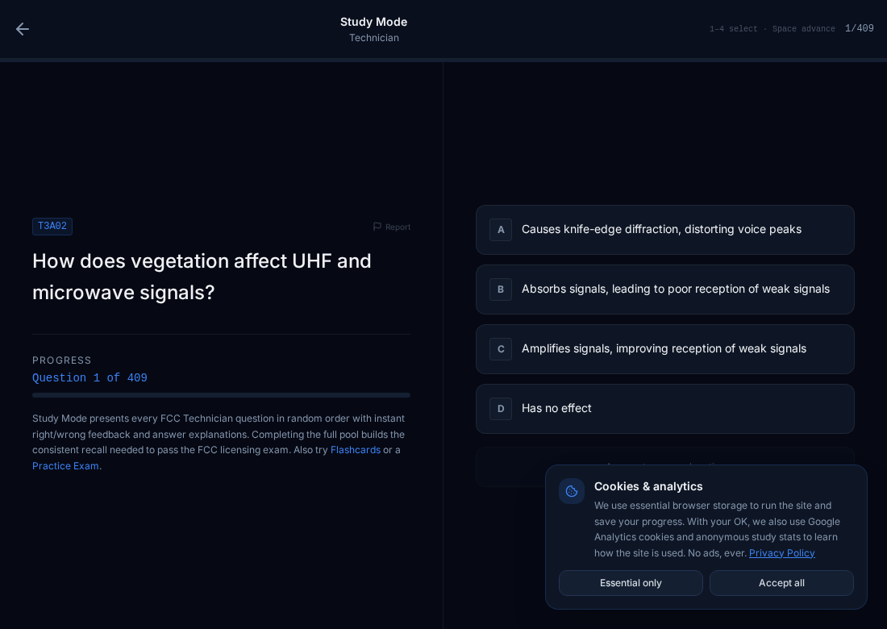

CENTAURI / ACADEMYPRODUCT 001

Centauri
Academy.
Making technical knowledge easier to learn—and easier to use.
A free ham-radio exam-prep platform built around question pools, study tools, practice exams, and progress tracking. The goal is to make the path from curious to licensed feel clear, useful, and accessible.
Explore Centauri Academy